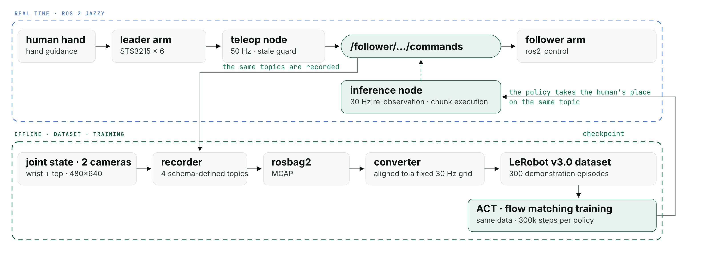

Five successful rollouts of the deployed ACT policy at 2× speed, spanning the cube placements tested — from the two cubes adjacent to the widest separation.
The task is to pick up a small cube and stack it on a larger base cube, with both cubes moved between trials. Hand-guide the leader arm to demonstrate it, record the episodes, convert them into a dataset, train a visuomotor policy, and run it back on the real arm in place of the human. ACT and a flow-matching policy share the pipeline — one PyTorch package, one checkpoint format — so deployment switches policy by checkpoint alone.

One YAML file (src/converter/config/so101.yaml) fixes joint order, topic names,
types and image sizes, and every stage errors on drift rather than warning — a
reordered joint trains fine and deploys to nothing. The converter resamples onto a fixed
30 Hz grid and skips an episode with too many interior gaps, because LeRobot synthesizes
time as frame_index / fps and would log a gap as a normal interval. The
inference node waits for a complete, fresh observation instead of extrapolating.
The observation is two 480×640 camera views — wrist and third-person — plus 6-DoF joint positions; the action is 6 absolute joint targets. ACT predicts a chunk of future targets and the node executes 20 of them before replanning, so the policy sees the world again roughly every 0.7 s at 30 Hz. Actions are denormalized with the statistics the checkpoint was trained under — publishing the raw normalized output looks plausible on joints centred near zero and throws the wrist joint by more than a radian. Flow matching shares the identical contract, dataset and training budget, and both were evaluated on hardware over the same placements.
60 rollouts per policy, one session each, over the same sequence of cube placements. Demonstrations were collected with the cubes randomized around a grid of marked points, so in-distribution means placements inside that range and out-of-distribution means displaced well beyond it. A trial is completed when the cube ends stacked and still standing 3 s after release. Intervals are Wilson 95%.
| Condition | ACT | 95% CI | Flow matching | 95% CI |
|---|---|---|---|---|
| In-distribution | 37/50 (74%) | 60–84% | 30/50 (60%) | 46–72% |
| In-range, near robot | 24/25 (96%) | — | 19/25 (76%) | — |
| In-range, far from robot | 13/25 (52%) | — | 11/25 (44%) | — |
| Out-of-distribution | 2/10 (20%) | 6–51% | 3/10 (30%) | 11–60% |
The observed in-range completion difference is 14 percentage points over 50 trials per policy. The reported paired analysis pools the 50 in-range and 10 out-of-range trials: the policies agreed on 38 of 60, ACT alone succeeded on 14 and flow matching alone on eight (exact McNemar p = 0.29). This test concerns the pooled 60-trial evaluation; it does not establish equal success rates or separately test the in-range subset. The sessions followed the same placement sequence with one or two mid-session placement changes, so pairing is approximate. Three ACT rollouts also logged command gaps of at least one second; timing and task failures should be interpreted separately.
The example videos compare behavior on the same nominal placement. The trial results do not establish a success-rate difference; the runtime measurements additionally show a difference in the achieved command-loop rate for these implementations.
| Per rollout, median | ACT | Flow matching |
|---|---|---|
| Command-loop rate (30 Hz requested) | 29.8 Hz | 26.8 Hz |
| Inference, mean | 3.5 ms | 8.4 ms |
| Inference, p95 | 16 ms | 102 ms |
Flow matching never reached the requested rate in any of its 60 rollouts: its ODE sampler costs about 100 ms on the ticks where it replans, against ACT's single forward pass, and that pulls the loop down to 27 Hz. The success-rate comparison is inconclusive, while ACT came closer to the requested command-loop rate in this setup. This is specific to the tested implementations and inference settings, not a general result about flow matching. A short sweep of chunk length and ODE steps (20/20, 20/10, 20/30, 10/30, 10/10) ran one in-distribution trial each; all five failed, which is a pilot rather than a comparison.
In distribution the policy reaches, lifts and places — and the stack then slides off within a second of release, the cube let go slightly off-centre and still moving. That is placement precision at the end of the episode, not perception or grasping. Out of distribution the failure differs in kind: the arm reaches for where the cube would have been in the demonstrations. The clips below are ACT's; flow matching fails the same two ways.
The failures are also not spread evenly over the workspace. Measuring where the base cube started in the first frame of every recording and splitting the 50 in-distribution placements at the median depth, ACT completed 24/25 of the near half against 13/25 of the far half (Fisher exact p = 0.001); flow matching, 19/25 against 11/25 (p = 0.042). Two policies trained on the same data degrade in the same region, which points at the demonstrations rather than at either policy — the far end of the reach is where 300 demonstrations are thinnest. Settling it means comparing the evaluation placements against the demonstration distribution, which is exactly what this session did not log, and is the first thing to fix in the next one.